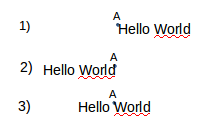
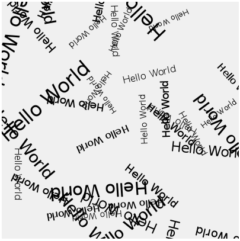

Il est possible d'écrire du texte dans la fenêtre de dessin.
La fonction "text" permet d'afficher une chaine de caractères. Cette fonction prend 3 paramètres : la chaine de caractères, la coordonnée x du coin "haut-gauche" du texte, la coordonnée y du coin "haut-gauche" du texte .
Saisissez et testez ce code
script.js
function setup(){
createCanvas(200,200);
background(240);
fill(0);
text("Hello World",60,100);
}
function draw(){
}
"fill" permet de choisir la couleur du texte.
Il est possible de choisir la taille de la police de caractère avec la fonction "textSize" qui prend pour unique paramètre la taille de la police de caractère.
J'ai dit un peu plus haut que les 2 derniers paramètres de la fonction "text" correspondaient aux coordonnées du coin "haut-gauche" du texte. Il est possible de modifier ce comportement par défaut grâce à la fonction "textAlign". Cette fonction prend un seul paramètre qui peut être : "LEFT", "RIGHT" ou "CENTER".
Dans le schéma ci-dessus, le point A a pour coordonnées les 2 derniers paramètres de la fonction "text".
Saisissez et testez ce code
script.js
function setup(){
createCanvas(200,200);
background(240);
fill(0);
text("Hello World",100,70);
textAlign(RIGHT);
text("Hello World",100,100);
textAlign(CENTER);
text("Hello World",100,130);
}
function draw(){
}
Écrire un programme permettant d'obtenir quelque chose qui ressemblera à ceci :
Pour vous aider :